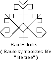

LATVIAN ABORIGINAL PHILOSOPHY
by Anda Vitols
- Glossary of Aboriginal Latvian Philosophy
-
- Most Ancient Latvia
-
- Philosophical Questions explained using Latvian Folklore verses "dainas"
- Metaphysics explained with dainas:
- Epistemology explained with dainas:
- Improvisation: Using Ancient Folklore today
-
- Baltic Cultural Influence in Storytelling
|

|
|